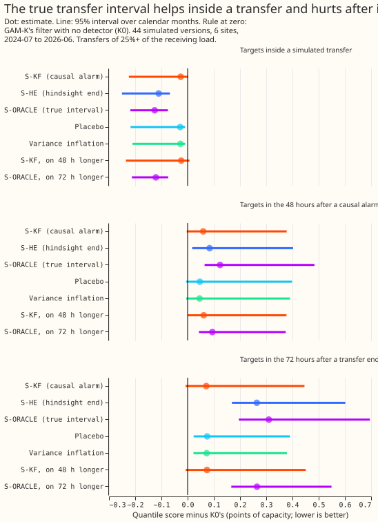

LSC fed into the GAM-K forecast
Take-home message. Telling GAM-K's filter when a load transfer started and ended helped inside the transfer and hurt in the 72 hours after it. GAM-K is the weather-driven demand forecast of earlier experiments, and its Kalman filter corrects each forecast with the most recent errors. A load transfer moves a block of demand from one substation to another, for example when a switch is thrown, and it shows as a step in the forecast error. We simulated transfers and gave the filter either the switching detector's alarm or the true start and end. Scores are quantile scores in points of effective capacity, and a positive difference from the filter alone (K0) is worse.
The answer in numbers. The arm given the true interval (S-ORACLE) scored 0.126 points better than K0 inside a transfer (95% interval 0.075 to 0.219), and 0.310 points worse in the 72 hours after the transfer ended (0.195 to 0.695), because the filter holds the step flat over the whole 7-day forecast. The detector's alarm arrives 48 hours after the step, and the arm that used it scored the same as a placebo that used random times. On the pre-registered measure, C1 (the 48 hours after an alarm), the deployable arm scored +0.059 points (-0.004 to +0.378).
What we asked
We asked whether the refit-offset neighbour-count detector (RO-NC, the detector of experiment 130) lowers the forecast's error when its output is fed into GAM-K's Kalman filter. RO-NC looks for steps in the forecast error that appear at one substation and are matched by opposite steps at neighbouring substations. We added transfers of 25% or more of the receiving load that last over a day to the real forecast errors, in 44 simulated versions of the data that touch six Primary substations. The transfers are the headline-band draw of experiment 147. We ran the detector with the causal end rule of experiment 147. We then gave the filter a second "switched" regime whose level variance is a multiple of the fitted one. The method follows experiment 111's Kalman filter, combined with a two-regime mixture in the style of the interacting multiple model filter used in target tracking.
Every setting scored worse than the filter alone on the tuning months. The stop rule (stop before the real year if the tuning months show no gain) therefore ended the experiment before the real year was scored.

Arms, rows, and numbers
- Arms. K0 (GAM-K's filter, no detector). S-KF (the two-regime filter; prior 0.5 of the switched regime while a causal alarm is active, level variance 4 times the fitted one, chosen on the tuning months from prior {0.5, 0.9} and multiplier {4, 16, 64, 256}). S-HE (the same filter with the hindsight end, not deployable). S-ORACLE (prior 0.5 inside the true transfer interval, not deployable). Placebo (the causal prior shifted by a random whole number of weeks). Variance inflation (the placebo prior with no likelihood update). Two post hoc arms keep the prior on longer: S-KF 48 hours after the end is called, and S-ORACLE 72 hours after the true end. All arms use K0's uncertainty bands, so each contrast is a difference in the forecast's location only.
- Rows.
fold_a_daily_gap_v1runs at the five decision substations and D9 (labels as in experiment 134), replicate months (even months 2024-07 to 2025-06) and the scored year (2025-07 to 2026-06), leads 0.5 to 168 h, rows outside the hand-filtered switching events. Three row sets, by target time: inside a simulated transfer (279,332 rows, 11 months), the 48 hours after a causal alarm on a simulated transfer (127,468 rows, 10 months; this is C1), and the 72 hours after a simulated transfer ends (281,864 rows, 12 months). Alarms from the real forecast-error series alone are not scored. Intervals resample calendar months of target time. - C1, S-KF minus K0, 48 hours after a causal alarm: +0.059 points (-0.004 to +0.378); K0's own score on these rows is 5.46 points (4.24 to 6.94). Mean-forecast absolute error: +0.064 (-0.008 to +0.397). The interval includes zero, so C1 does not show a gain.
- Inside a simulated transfer (K0's own score 8.84, 7.24 to 15.03): S-KF -0.027 (-0.224 to +0.002), placebo -0.028 (-0.218 to -0.009), variance inflation -0.027 (-0.211 to -0.009), S-HE -0.111 (-0.250 to -0.068), S-ORACLE -0.126 (-0.219 to -0.075).
- 72 hours after the transfer ends: S-KF +0.071 (-0.008 to +0.446), placebo +0.074 (+0.023 to +0.390), S-HE +0.264 (+0.169 to +0.602), S-ORACLE +0.310 (+0.195 to +0.695).
- 48 hours after a causal alarm, other arms: S-HE +0.084 (+0.017 to +0.402), S-ORACLE +0.124 (+0.065 to +0.484), placebo +0.047 (-0.006 to +0.399), variance inflation +0.046 (-0.005 to +0.390). The controls were run on the simulated data only.
- The post hoc longer-prior arms (labelled post hoc): S-KF kept on 48 hours longer is +0.061 (+0.000 to +0.377) after an alarm, -0.024 (-0.235 to +0.007) inside a transfer, +0.074 (-0.007 to +0.450) after the end. S-ORACLE kept on 72 hours longer is -0.121 (-0.213 to -0.074) inside, +0.264 (+0.166 to +0.549) after the end. Keeping the switched regime on after the end did not remove the loss.
- What the pattern says. The filter's correction is a level held flat at every lead. The true interval lets the filter correct fast inside the transfer. For a forecast made inside the transfer, the same correction is wrong at the targets after the transfer ends. The causal alarm is known only 48 hours after the step, by which time K0 has adapted too. The inside-transfer gains of S-KF, the placebo, and variance inflation are the same (about -0.027), so the detector's timing adds nothing to them.
- K0 adapts slowly at the one substation tested. On D9's real residuals with an 8-point step
lasting 4 days, the Opus audit found that K0 still misses 5.4 of 8 points after 24 to 36 hours
and 3.3 after 3 days.
e00141_synthetic.pyuses illustrative settings and a single hour band, so it does not represent the fitted filter. - Tail calibration (48 hours after a causal alarm; K0 and S-KF alike): q95 coverage 88.2% against a nominal 95%, and q05 coverage (the share of actuals above q05) 85.0% against 95%. On winter nights (a proxy for cold nights: UTC 00:00 to 06:00, November to March, 6,696 rows) q95 coverage is 85.7% for K0, 85.6% for S-KF, and 83.3% for S-ORACLE. No q01 or q99 results were computed.
- By site, S-KF minus K0 after an alarm: D10 +0.257, D14 +0.040, D16 +0.027, D9 +0.026, D11 +0.008, D5 -0.001. By period: replicate months +0.002, scored year +0.031. Dropping D10 leaves +0.020, and dropping any other site leaves +0.063 to +0.071.
Checks and audit
- Median minus mean forecast per site (rows after an alarm; K0 and S-KF share the same value): D10 -0.12, D14 +0.02, D11 -0.05, D16 +0.00, D9 -0.07, D5 -0.48 points of effective capacity. D5's median sits half a point under its mean on these rows; the correction is common to all arms, so contrasts are unaffected.
- The mean-forecast error beside each quantile-score contrast points the same way as the
quantile score for every arm (printed in
report.json). -
Triggers fired: a failed known-answer control, and an arm with more information scoring worse. S-ORACLE scored worse than K0 on the pre-registered rows (triggers 1 and 5 of the
ml-experimentskill). The Opus audit (one review, approved by the manager) found no bug in the filter, the prior, the injection, or the scoring, and traced the loss to the 72 hours after the transfer ends. Its findings and their triage:- Accepted: the rows labelled "inside a transfer" included the 72 hours after it. The page now scores the two separately.
- Accepted: 88% of the alarm intervals in the first scoring were alarms from the real forecast-error series repeated in every simulated version. Only alarms on a simulated transfer are scored now.
- Accepted: "the filter adapts within about a day" was false for the fitted settings, and S-ORACLE is not an upper bound because its prior is off at the reverse step. Both claims are removed.
- Accepted: the first tuning used the mixed rows and favoured the smallest multiplier. It is re-run on the corrected row sets and still picks prior 0.5 and multiplier 4 (mean gain +0.003, so the stop rule still fires).
- Not applied: the audit's suggestion to re-tune on rows inside the transfer only, which would tune the deployable arm on rows that it can only see 48 hours late.
- Noted, no change: the detector's timestamps sit one half-hour later than the site's grid timestamps. The forecast-error series and the scored actual shift together, so no number moves.
-
Leakage review (one Sonnet reviewer, code only). It found no way for a deployable arm to see data later than its forecast time. The filter runs forward, the 96-half-hour onset lag matches the alarm statistic's window,
known_fromis the stamp at which the end statistic is computable, and tuning reads only the tuning months. Its other findings and their triage:- Accepted, as a limit on the controls (not re-run): the placebo prior is shifted by whole weeks, so it seldom falls on the scored rows, which sit around events. "Matches the placebo" therefore shows that a late alarm has no measurable gain over an unrelated prior, and the page's claim stays at that. The variance-inflation control also differs from S-KF in both alarm times and the likelihood update, so it does not isolate the update alone.
- Accepted, as a limit on the rows (not re-run): the "after a causal alarm" rows count any alarm within 2 hours of a transfer, including repeat and return-step alarms, so they describe cases where the detector fired near a real transfer. They exclude the cost of false alarms.
- Accepted, code only: the unused
step_pointsandage_daysarrays are removed. They fed no arm, so no number moves. - Noted: the scored-score files are reused if they exist, so a re-tune needs them deleted first; the chosen settings (prior 0.5, multiplier 4) were the ones used for the scored files. The multiplier 4 sits at the lower edge of the grid (4 to 256), so a smaller multiplier was not tried.
- Not checked by the reviewer: where experiment 138's classifier and threshold were fitted.
Departures from the plan
- S-KF's prior is binary (0.5 while an alarm is active, 0 otherwise), not a logistic function of the detector's score. S-F (plain features) was not built, and the real year was not scored (C3 and C5 have no number), because the stop rule fired on the tuning months. The placebo and variance-inflation controls were run on the simulated data only.
- The causal alarm is known from 96 half-hours (48 hours) after the step starts, a conservative
stand-in for the statistic's 24-hour window plus the 24-hour peak test. The planned unit test
(truncating the forecast-error series and checking the score is unchanged) was not written, so
the
claim that the alarm time is causal rests on this lag and on the end rule's own
known_from. A leak would favour the detector, which makes the negative result stronger, not weaker. - Intervals are 95%, not the planned family-wise level, because only one contrast carries a verdict. The simulated data use the ERA5-driven residuals of experiment 130 (cleaner than live residuals), the fast-path injection, and K0's uncertainty bands, which were not refitted per arm.
- "Within 48 hours of an alarm" means target valid time from the stamp at which the alarm is known. The detector and the moved megawatts are those of experiment 147's headline draw. The two longer-prior arms are post hoc.
What the next experiment should answer
A filter that holds the transfer's step flat at every lead is wrong once the transfer ends. An experiment could test a correction for a detected transfer that decays toward zero over the typical transfer duration (from the logged operations), on the same simulated data, with the true-interval arm as its ceiling and the causal alarm as the deployable arm. It could also test the alarm at the shorter lag that a 24-hour step statistic allows if the peak test is dropped.
Plan (written before any fit)
Question. How much does the switching detector help when its output is fed into the forecast itself? Earlier results measured the ceiling only: a perfect detector lowers the best guess's score by 0.42% (experiment 44), and true moved megawatts close 83% of the gap that the refit-offset neighbour-count detector (RO-NC) closes 16% of (experiment 88). RO-NC is the detector of experiment 130. Lab conditions are allowed (maintainer, 2026-10-18); every shortcut is named in the write-up.
Base forecast. GAM-K member forecasts and the K0 filter as experiment 134 stores them (monthly refits from experiment 111). The best-guess assembly of experiment 136 is not merged; if it is ready before the real-year scoring, the same arms are re-run on it, labelled post hoc.
Arms.
- K0 — GAM-K's filter with no detector input (control).
- S-KF — the filter becomes a two-regime mixture per hour band. Regime N ("normal running
arrangement") uses the fitted level variance
q; regime S ("switched") usesqtimes a multiplier chosen on the tuning months. The prior probability of S per half-hour is a logistic function of the causal RO-NC score, and the filter's likelihood updates it. The correction is the posterior-weighted mean of the two regimes' corrections. - S-F — K0 plus a regression of the residual on two causal features: event age (hours since the causal onset, capped at 7 days) and signed step size. Fitted on the tuning months.
- S-HE — S-KF with the detector's hindsight end (the interval end from experiment 130's end rule). NOT DEPLOYABLE. It is the ceiling for the causal arms.
- S-ORACLE — S-KF whose prior is 1 inside the true transfer interval and 0 outside, from the injected truth (and from the logged events in the real year). NOT DEPLOYABLE. Upper bound.
- Causal onset-only signal is the deployable input. The harness takes the signal as a table of
(series, half-hour, score, signed step), so the causal live end rule of experiment 140 can be swapped in later without changing the arms.
Causal score. RO-NC's step statistic compares the mean of the residual after a stamp with the
mean before it, so a score stamped at the onset has seen up to 24 hours of the future. The
deployable score is therefore re-indexed: the score at stamp s uses only residuals ending no
later than s minus 3.5 hours (the telemetry delay), the alarm is stamped when the "after" window
is full and not at the onset, and the peak, partner, and veto tests use the same cut. A unit test
truncates the residual stream at s minus 3.5 hours and requires the score at s to be unchanged.
Only S-HE and S-ORACLE may read onset-stamped scores.
New filter core (a deliverable). Experiment 134's filter is single-regime, so S-KF needs a
two-regime core in this folder: a per-stamp prior input, a level-variance multiplier for regime S,
a posterior update from the two regimes' likelihoods, and moment-matched mixing of state and
covariance. Gate: S-KF with the prior fixed at 0 reproduces K0 to numerical tolerance. The
regime-S multiplier grid is 4, 16, 64, and 256 times q, chosen on the tuning months.
Known answer first (injected world). Draw transfers of known size and timing in the real
residual stream using experiment 130's injection harness (headline band: moved load 25% or more of
the receiving load, lasting over 1 day; other bands descriptively), with injection seeds disjoint
from the tuning months. The frozen GAM-K forecast is not refitted, so adding the moved megawatts to
the stream (experiment 130's fast path) is valid for the filters. Scoring uses actuals plus the
signed moved megawatts at the donor and each receiver, never the original actuals, normalised by
the same effective capacity as the score. The spread is shared across arms (K0's), so every
contrast is a location-only difference. The scorable mask is recomputed on the injected world:
injected rows stay in, and logged events overlapping an injection window are dropped. Two gates:
an injected event of size zero reproduces K0 exactly, and check (a): S-KF's posterior probability of
S passes 0.5 within 24 hours of the causal alarm for at least 60% of detected headline-band events.
Controls.
- Placebo. S-KF with the causal score shifted by a random whole number of weeks within each series, which keeps the alarm rate, durations, and hour-of-day structure. Predicted gain: about zero.
- Variance-inflation control. K0 with regime S's multiplier applied at the same fraction of stamps but unrelated to events (the placebo prior, with no likelihood update), to separate knowing when from simply adapting faster.
- False alarms. Report the alarm rate per series per year, the detection-delay distribution, and alarms on Economy 7 winter mornings and evenings.
- S-F is fitted on the injected tuning world (disjoint seeds), because the real tuning months hold few events; the number of events is stated.
Real year. The same arms on the real scored year. The real year can support only "no harm" (C3) and a descriptive gain near events (C5), because experiment 44 bounds the whole-year gain at about 0.42%. Logged events are used only descriptively. The expected whole-year change is computed from the injected-world gain and experiment 44's event frequency and compared with C3's interval width before the verdict.
Rows and scoring. fold_a_daily_gap_v1; the five decision substations of experiment 134 plus
D9 beside them; leads 0.5 to 168 h with D+1 (15.5 to 39 h) beside, and the gain by lead band;
winter (November to March) and cold nights (daily mean under about 3 C) separately; tail
calibration, with q95 and q99 coverage and pinball loss on cold nights reported separately (q95
coverage was 73% to 78% in experiment 125); intervals resample whole calendar months; absolute
scores for K0, climatology, the manual heuristic, and (when ready) the best guess shown beside every
contrast. "Within 48 hours of an onset" means the target valid time. A pooled figure weights the six
sites equally. Labels for the sites follow experiment 134; no metered-generator series is used.
Contrasts (family-wise level 5%, Bonferroni across C1, C2, C3, and C5).
- C1: S-KF minus K0, injected world, target rows within 48 hours of a causal alarm on a headline-band transfer.
- C2: S-F minus K0, same rows.
- C3: S-KF minus K0, real scored year, all rows outside logged events (non-inferiority).
- C4: share of the K0-to-S-ORACLE gap closed by S-KF, injected world (descriptive).
- C5: S-KF minus K0, real scored year, rows within 48 hours of a causal alarm or of a logged event.
- Placebo minus K0 and variance-inflation control minus K0 are descriptive, and S-KF must beat both
on C1 for
supported.
Decision rule. The threshold is set by the cost of porting: a two-regime filter plus a detector pipeline step is a new component. Before the verdict, the plan fixes the minimum detectable effect as the half-width of C3's month-resampled interval.
supported: C1's interval is wholly below zero, S-KF beats the placebo and the variance-inflation control on C1, C3's upper end is at most +0.005 points, and the q95 and q99 coverage on cold nights is within 2 points of K0's.not supported: C1's interval includes zero or lies above it, or S-KF fails to beat the placebo.inconclusive: otherwise, including a C3 interval wider than +0.005 points.
C1 is an easy test by construction (large injected steps). A supported verdict therefore means
the mechanism works in the lab, and the write-up says plainly that the real-year benefit is
bounded by experiment 44 and judged by C3 and C5.
Stop rule. If check (a) fails, or C1's point estimate is above zero on the tuning months, stop
before scoring the real year, record not supported or inconclusive, and write up what the
failure rules out. Compute cap: 6 cores at one thread each, 16 GB per job.
Compute. CPU only (the corrections are small filters on cached forecasts).
systemd-run --user --scope -p MemoryMax=16G -p OOMPolicy=continue, 6 workers,
OMP_NUM_THREADS=1.
Lab shortcuts, named. ERA5-driven residuals in the detector (as in experiment 130), which are cleaner than live ENS-driven residuals and so inflate C1; hindsight end in S-HE; true megawatts in S-ORACLE; fast-path injection.
Data processing. Reads cleaned_power_time_series with the substation_zero flags treated as
kept, as experiment 132 did.
Reviews planned
A Sonnet review of the plan is triaged above (leakage of the score, the new filter core, scoring of injected actuals, the vacuous verdict rule, and the missing controls were accepted). Sonnet then reviews the code for leakage (the detector score at a half-hour may use residuals ending no later than that half-hour minus the 3.5-hour telemetry delay), then the write-up. One Opus review only with the maintainer's approval.